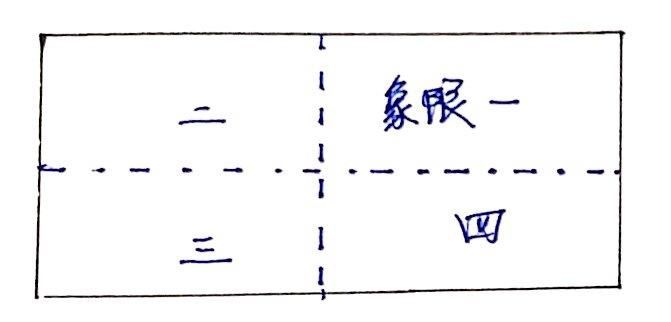
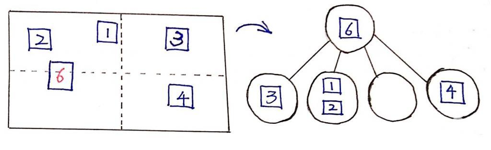
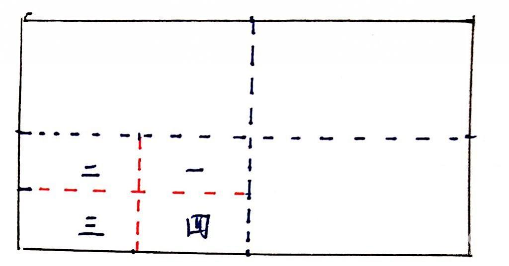
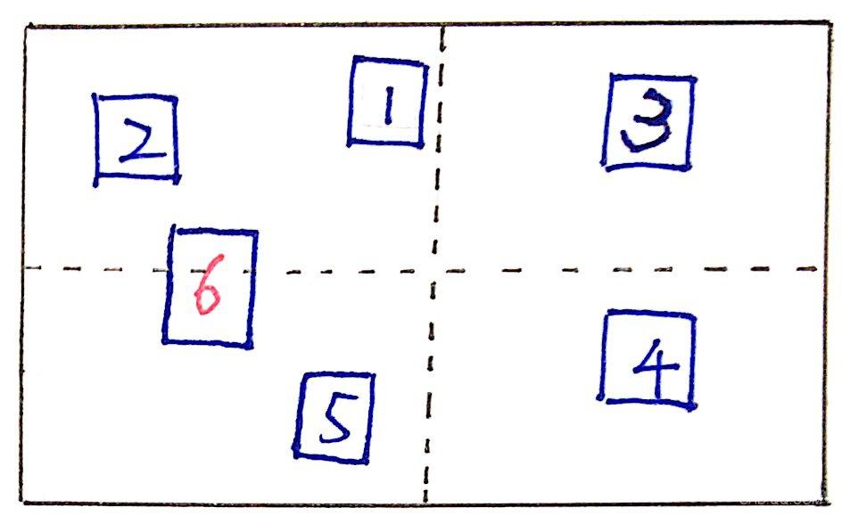

四叉树优化碰撞检测
发表于2016-07-06
想免费获取内部独家PPT资料库？观看行业大牛直播？点击加入腾讯游戏学院游戏程序行业精英群
711501594 游戏中碰撞检测分为两个阶段：broad phase 和 narrow phase。接下来要介绍的就是broad phase。在broad phase这个阶段，我们的主要任务是将屏幕上的物体进行筛选，筛选出最可能发生碰撞的物体集合。
试想想，屏幕上有N个物体，如果我们对每两个物体都进行碰撞检测，那时间复杂度就有N^2。但实际上，在游戏画面中，并不是每两个物体都需要进行碰撞检测，比如一个在屏幕右上方的物体和一个在屏幕左上方的物体之间明显是不会发生碰撞的，所以我们不需要对这两个物体进行碰撞检测。那么，现在我们就需要一个这样的算法去将屏幕上可能和不可能发生碰撞的物体区分开来。
一、四叉树原理
正如其名，四叉树就是每个父节点都具有四个子节点的树状数据结构。由于要区分屏幕上的物体，我们要将屏幕划分为四个区域，所以四叉树的四个节点正合适表示这四个区域。
屏幕上四个区域分别为：左上区域 + 右上区域 + 右下区域 + 左下区域，方便起见，我们分别命名为：象限1、象限2、象限3、象限4：

我们将完全处于某一个象限的物体存储在该象限对应的子节点下，当然，也存在跨越多个象限的物体，我们将它们存在父节点中：

如果某个象限内的物体的数量过多，它会同样会分裂成四个子象限，以此类推：

二、实现四叉树
我们先定义四叉树的结构：
1 2 3 4 5 6 7 8 9 10 11 12 13 14 15 16 17 18 19 20 21 22 23 24 25 26 27 28 29 30 31 32 33 34 35 36 37 38 39 40 41 42 43 44 45 46 47 48 49 50 51 52 53 54 | /* 四叉树节点包含： - objects: 用于存储物体对象 - nodes: 存储四个子节点 - level: 该节点的深度，根节点的默认深度为0 - bounds: 该节点对应的象限在屏幕上的范围，bounds是一个矩形 */ var QuadTree = function QuadTree(bounds, level) { this.objects = []; this.nodes = []; this.level = typeof level === 'undefined' ? 0 : level; this.bounds = bounds; } /* 常量： - MAX_OBJECTS: 每个节点（象限）所能包含物体的最大数量 - MAX_LEVELS: 四叉树的最大深度 */ QuadTree.prototype.MAX_OBJECTS = 10; QuadTree.prototype.MAX_LEVELS = 5; 接下来，我们需要判断屏幕上的物体属于哪个象限： /* 获取物体对应的象限序号，以屏幕中心为界限，切割屏幕: - 右上：象限一 - 左上：象限二 - 左下：象限三 - 右下：象限四 */ QuadTree.prototype.getIndex = function(rect) { var bounds = this.bounds, onTop = rect.y + rect.height <= bounds.centroid.y, onBottom = rect.y >= bounds.centroid.y, onLeft = rect.x + rect.w <= bounds.centroid.x, onRight = rect.x >= bounds.centroid.x; if (onTop) { if (onRight) { return 0; } else if (onLeft) { return 1; } } else if (onBottom) { if (onLeft) { return 2; } else if (onRight) { return 3; } } // 如果物体跨越多个象限，则放回-1 return -1; }; |
我们知道，如果某一个象限（节点）内存储的物体数量超过了MAX_OBJECTS最大数量，则需要对这个节点进行划分，所以我们同样需要一个划分函数，它的工作就是将一个象限看作一个屏幕，将其划分为四个子象限：
1 2 3 4 5 6 7 8 9 10 11 12 13 14 15 16 | // 划分 QuadTree.prototype.split = function() { var level = this.level, bounds = this.bounds, x = bounds.x, y = bounds.y, sWidth = bounds.width / 2, sHeight = bounds.height / 2; this.nodes.push( new QuadTree(new Rect(bounds.centroid.x, y, sWidth, sHeight), level + 1), new QuadTree(new Rect(x, y, sWidth, sHeight), level + 1), new QuadTree(new Rect(x, bounds.centroid.y, sWidth, sHeight), level + 1), new QuadTree(new Rect(bounds.centroid.x, bounds.centroid.y, sWidth, sHeight), level + 1) ); }; |
为了初始化四叉树，我们也需要实现四叉树的插入功能，用于将物体插入到四叉树中：
1 2 3 4 5 6 7 8 9 10 11 12 13 14 15 16 17 18 19 20 21 22 23 24 25 26 27 28 29 30 31 32 33 34 35 36 | /* 插入功能： - 如果当前节点[ 存在 ]子节点，则检查物体到底属于哪个子节点，如果能匹配到子节点，则将该物体插入到该子节点中 - 如果当前节点[ 不存在 ]子节点，将该物体存储在当前节点。随后，检查当前节点的存储数量，如果超过了最大存储数量，则对当前节点进行划分，划分完成后，将当前节点存储的物体重新分配到四个子节点中。 */ QuadTree.prototype.insert = function(rect) { var objs = this.objects, i, index; // 如果该节点下存在子节点 if (this.nodes.length) { index = this.getIndex(rect); if (index !== -1) { this.nodes[index].insert(rect); return; } } // 否则存储在当前节点下 objs.push(rect); // 如果当前节点存储的数量超过了MAX_OBJECTS if (!this.nodes.length && this.objects.length > this.MAX_OBJECTS && this.level < this.MAX_LEVELS) { this.split(); for (i = objs.length - 1; i >= 0; i--) { index = this.getIndex(objs[i]); if (index !== -1) { this.nodes[index].insert(objs.splice(i, 1)[0]); } } } }; |
三、筛选功能
重头戏来啦！现在我们已经能够初始化一个四叉树了，接下来我们要解决——如何将可能发生碰撞的物体集合选取出来：
1 2 3 4 5 6 7 8 9 10 11 12 13 14 15 16 17 18 19 | /* 检索功能： 给出一个物体对象，该函数负责将该物体可能发生碰撞的所有物体选取出来。该函数先查找物体所属的象限，该象限下的物体都是有可能发生碰撞的，然后再递归地查找子象限... */ QuadTree.prototype.retrieve = function(rect) { var result = [], index; if (this.nodes.length) { index = this.getIndex(rect); if (index !== -1) { resutl = result.concat(this.nodes[index].retrieve(rect)); } } result = result.concat(this.objects); return result; }; |
咋一看，这个函数貌似没什么问题，但是我们知道，并不是所有物体都恰好完全属于某一个象限的，比如有个物体跨越了象限一和象限二：

一眼就能看出来，矩形6可能发生碰撞的物体集合包括：矩形1、矩形2和矩形5。而我们实现的retrive函数筛选出来的集合则是为空，显然是不正确的，我们需要改进这块代码。
为了让跨越多个象限的物体也能递归地执行retrive函数，从而找到所有可能碰撞的物体集合，我们需要让这个物体同时属于这些象限。
以矩形6为例，我们如何让矩形6同时属于象限二和象限三呢？我们的做法是：以象限的边界为切割线，将矩形6切割为两个子矩形。我们能够确定的是：这两个子矩形分别属于象限二和象限三，所以我们能用这两个子矩形递归的调用retrive函数，从而找到所有可能碰撞的物体集合。

改进后的retrive函数：
1 2 3 4 5 6 7 8 9 10 11 12 13 14 15 16 17 18 19 20 21 22 23 24 25 26 | // 检索 QuadTree.prototype.retrieve = function(rect) { var result = [], arr, i, index; if (this.nodes.length) { index = this.getIndex(rect); if (index !== -1) { resutl = result.concat(this.nodes[index].retrieve(rect)); } else { // 切割矩形 arr = rect.carve(this.bounds); for (i = arr.length - 1; i >= 0; i--) { index = this.getIndex(arr[i]); resutl = result.concat(this.nodes[index].retrieve(rect)); } } } result = result.concat(this.objects); return result; } |
四、动态更新
我们已经实现了四叉树全部的功能，先介绍一下四叉树的用法。
首先创建一个四叉树：
1 | var tree = new Quadtree(new Rect(0, 0, 1000, 500)); |
接下来，我们需要初始化四叉树，我们将屏幕上的所有物体都插入到这个四叉树中：
1 2 3 4 5 6 7 8 9 10 11 12 13 | var rectsArr = [/* ... */]; rectsArr.forEach(function(rect) { tree.insert(rect); }); 一棵四叉树已经初始化完成，我们调用retrive找出每个物体对应的碰撞物体集合，并进行下一步的narrow phase部分的碰撞检测了： rectsArr.forEach(function(rect) { var result = tree.retrive(rect); result.forEach(function() { // norrow phase部分的碰撞检测... }); }) |
我们现在知道四叉树的使用方法了，但同时我们也注意到一个问题：由于屏幕的物体是运行的，前一秒在象限一的物体可能下一秒就跑到象限二了，所以每一帧都需要重新初始化四叉树。这意味着，每16ms就要初始化一次四叉树，这个代价太大，太得不偿失了：
1 2 3 4 5 6 7 8 9 10 11 | var run = function run() { // 重新向四叉树中插入所有物体，重新初始化四叉树 // ... // 筛选物体集合并进行碰撞检测 // ... requestAnimationFrame(run); }; requestAnimationFrame(run); |
我们想想，是不是有这样做的必要？实际上，只是部分物体从一个象限跑到另一个象限，而其他物体都是保持在原先象限中，所以我们只需要重新插入这部分物体即可，从而避免了对所有物体进行插入操作。
我们为四叉树增添这部分的功能，其名为动态更新：
1 2 3 4 5 6 7 8 9 10 11 12 13 14 15 16 17 18 19 20 21 22 23 24 25 26 27 28 29 30 31 32 33 34 35 36 37 38 39 40 | // 判断矩形是否在象限范围内 function isInner(rect, bounds) { return rect.x >= bounds.x && rect.x + width <= bounds.x + bounds.width && rect.y >= bounds.y && rect.y + rect.height <= bounds.y + bounds.height; } /* 动态更新： 从根节点深入四叉树，检查四叉树各个节点存储的物体是否依旧属于该节点（象限）的范围之内，如果不属于，则重新插入该物体。 */ QuadTree.prototype.refresh = function(root) { var objs = this.objects, rect, index, i, len; root = root || this; for (i = objs.length - 1; i >= 0; i--) { rect = objs[i]; index = this.getIndex(rect); // 如果矩形不属于该象限，则将该矩形重新插入 if (!isInner(rect, this.bounds)) { if (this !== root) { root.insert(objs.splice(i, 1)[0]); } // 如果矩形属于该象限 且 该象限具有子象限，则 // 将该矩形安插到子象限中 } else if (this.nodes.length) { this.nodes[index].insert(objs.splice(i, 1)[0]); } } // 递归刷新子象限 for (i = 0, len = this.nodes.length; i < len; i++) { this.nodes[i].refresh(root); } }; |
现在有了动态更新功能，每一帧中只需要对该四叉树进行动态更新即可：
1 2 3 4 5 6 7 8 9 10 11 | var run = function run() { // 动态更新 tree.refresh(); // 筛选物体集合并进行碰撞检测 // ... requestAnimationFrame(run); }; requestAnimationFrame(run); |
以上。
五、参考
腾讯GAD游戏程序交流群：484290331